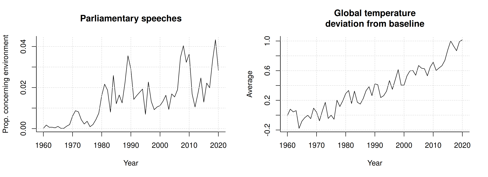
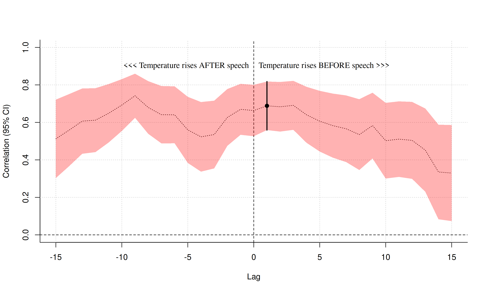
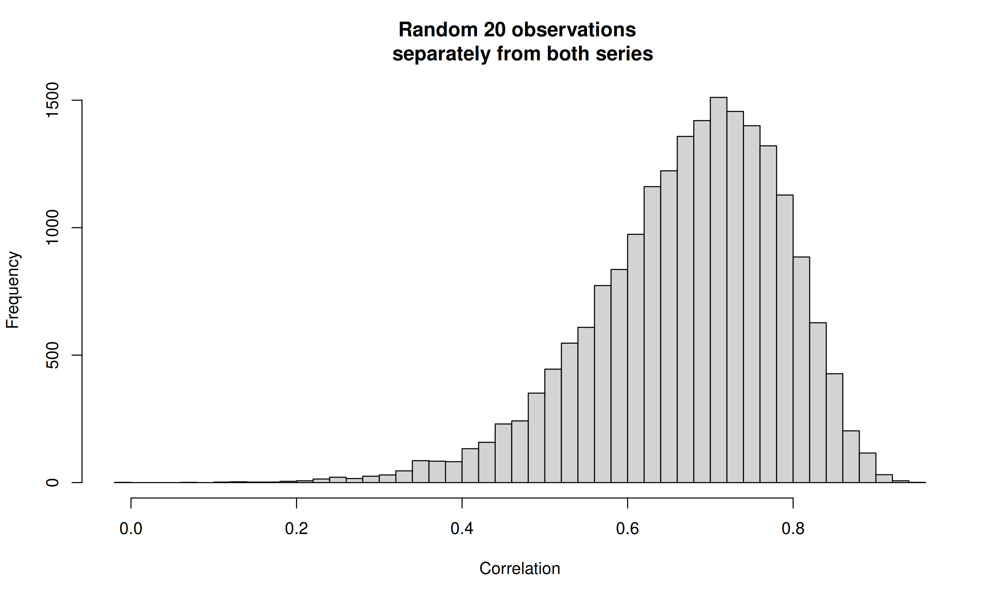
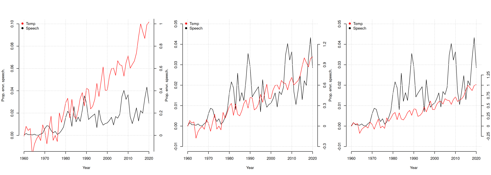

Aluksi
Elo ja Karimäki (2021) käsittelevät artikkelissaan Luonnonsuojelusta ilmastopolitiikkaan ympäristöteemaisten parlamenttipuheiden osuuden muutosta 1960-luvulta 2020-luvulle. Tuota puheiden osuutta verrataan aineistossa vuosittaisiin globaaleihin keskilämpötilan poikkeamiin ja kirjoittajat esittävät, että nämä ovat yhteydesssä toisiinsa. Ja varmasti näin onkin, en tyrmää heidän esittämiään laadullisia väitteitä, mutta joukkoon on päässyt pari argumenttia, jotka ovat heikompia. Näitä argumentteje voidaan käsitellä multiversumianalyysin keinoin, joten jos tällaiset asiat mieltäsi kiehtovat, olkaa hyvä ja lukekaahan eteenpäin.
Ensimmäinen noista argumenteista koskee korrelaation laskemista kyseenalaisten aikasarjojen välillä. Toinen argumentti käyttää tukenaan aikasarjojen piirtämistä samaan kuvaajaan, mutta eri tavalla skaalatuilla y-akselileilla.
Ja tosiaan, käytän tämän mahdollisuutena kytkeä nämä niin kutsuttuun multiversmianalyysiin. Siinä ei siis ole kyse raflaavista kosmologisista väitteistä vaan näkökulmasta tilastolliseen analyysiin: voimme tehdä analyysin, tai kuvaajan piirtämisen, monella tapaa, ja päätelmämme ovat merkittävällä tavalla riippuvia tekemistämme valinnoista. Katsomalla noita muita tapoja toteuttaa analyysi, saamme ehkäpä hieman realistisemman kuvan argumentaation vahvuudesta.
Analyysissa käytetyistä aikasarjoista olen tehnyt oman rekonstruktioni (ks. liite) ja nämä ovat nähtävissä alla kuvassa numero yksi:

Muuttujien korrelaatio
Kirjoittajat laskevat esitettyjen aikasarjojen välisen korrelaation myöhästämällä toista niistä vuodella. Mutta annetaanpa kirjoittajien itse kertoa:
Pearsonin korrelaatiotestin tulos antaa korrelaation vahvuudeksi 0,69, joka on myös tilastollisesti erittäin merkitsevä (p<,005). Testiarvon laskimme siten, että kulloisenkin vuoden ympäristöteemaan liittyvien täysistuntopuheenvuorojen osuutta verrattiin edeltävän vuoden maapallon keskilämpötilan muutokseen. Näin pyrimme huomioimaan sen, että asioiden politisoituminen tapahtuu useimmiten viipeellä. Kiteyttäen: tulokset viittaavat siihen, että maapallon keskilämpötilan nousu, joka on ollut merkittävä osa ilmastonmuutokseen liittyvää julkista keskustelua, on julkisen keskustelun kautta vaikuttanut eduskunnassa käytyjen keskustelujen intensiteettiin. (s. 383-384).
Pätkässä puhutaan edeltävän vuoden keskilämpötilan muutoksesta ja toisaalta keskilämpötilan noususta, mutta oletan, että kyseessä on keskilämpötilapoikkeamien aikasarja.
(Muutoksista puhuminen voisi viitata aikasarjan differentointiin, eli peräkkäisten havaintojen erotusten laskemiseen, mikä on järkevää, mutta jota ei tässä ilmeisesti ole tehty, koska se ei näyttäisi olevan linjassa raportoitujen tulosten kanssa).
Ongelmana tässä on se, että koska molemmat aikasarjat ovat nousevia (katsokaa kuvaa 1), niitä voi viivästää melkein miten tahansa ja niiden välinen korrelaatio tulee olemaan positiivinen — oli niiden välillä yhteyttä tai ei.
Alla olevaan kuvaajaan (kuva 2) olen laskenut korrelaatioita viivästämällä aikasarjoja eri tavoin. Positiivinen viive (x-akseli) tarkoittaa, että lämpötilojen aikasarja edeltää parlamenttipuheiden aikasarjaa. Negatiivinen taasen päinvastaista: että parlamenttipuheet lisääntyvät ennen lämpötilan muutosta. Varjostettu alue on 95%:n luottamusväli: kaikki luottamusvälit, jotka eivät sisällä nollaa ovat tilastollisesti merkitseviä. Artikkelissa korrelaatio on laskettu viivästämällä puheiden aikasarjaa yhdellä vuodella: tämä on korostettu kuvaan mustalla pystyviivalla.

Itse asiassa voimme valita molemmista sarjoista erikseen satunnaisia havaintoja, ja kunhan niiden ajallinen järjestys säilytetään, niiden välillä tulee melkein aina olemaan positiivinen korrelaatio. Alla oleva kuvaaja on toteutettu niin, että olen valinnut ensin 20 satunnaista vuotta parlamenttipuheiden aikasarjasta ja sen jälkeen toiset, mahdollisesti eri, 20 satunnaista vuotta lämpötilojen aikasarjasta. Huomaamme, että korrelaatiot tuppaavat olemaan positiivisia (ks. x-akselin arvoja):

Ongelma on siis se, että jos käytämme argumenttina aikasarjojen välillä olevaa tilastollisesti merkitsevää (voimakasta) korrelaatiota, voimme itse asiassa argumentoida melkein mitä tahansa. Ehkäpä parlamenttipuheet seuraavat lämpötilaa 1:n, 2:n tai 10:n vuoden viipeellä; tai toisaalta että ehkäpä parlamenttipuheet lisääntyvät ennen lämpötilan muutosta, kenties ilmastotieteilijöiden ennakkovaroituksiin perustuen.
Aikasarjojen piirtäminen samaan kuvaajaan
Sivulla 383 kirjoittajat kirjoittavat:
Kiinnostava havainto on myös se, että etenkin 1990-luvun puolivälistä eteenpäin eduskuntapuheenvuorojen trendikäyrä myötäilee hyvin vahvasti maapallon keskilämpötilan vuosittaista muutosta kuvaavaa käyrää. Tulkitsemme tätä niin, että ilmastonmuutoksen keskeisenä indikaattorina asiantuntijapuheessa käytetty maapallon keskilämpötilan muutos työntyi 1990-luvulla yhä vahvemmin myös poliittiseen keskusteluun.
He viitannevat kuvaajaan 2 (s. 384), johon molemmat aikasarjat on piirretty samaan kuvaajaan. Koska aikasarjojen asteikot ovat erilaiset, niitä on skaalattu, jotta ne voitaisiin piirtää samanaikaisesti. Ongelmana tässä on se, että tuo myötäilyn määrä riippuu vahvasti siitä, miten tuo skaalaus tehdään.
Alla olevaan kuvaajaan olen piirtänyt kolme eri versiota siitä, miten nämä aikasarjat voisi mahduttaa samaan kuvaajaan. Huomautan, että käytän tässä raakadataa itsessään, en siloteltua versiota (eli kirjoittajien mainitsemaa trendikäyrää), mutta tällä ei ole vaikutusta asiaan itsessään.

Vasemmanpuolimmaisessa paneelissa näyttäisi siltä, että aikasarjat ovat myötäilleet toisiaan noin 90-luvulle saakka ja sen jälkeen puheenvuorojen suhteellinen osuus jää jälkeen lämpötilapoikkeamista. Keskimmäisessä paneelissa, aivan kuten artikkelissakin, aikasarjat näyttäisivät myötäilevän toisiaan koko jaksolla. Oikeanpuolimmaisessa puheiden suhteellinen osuus näyttäisi 80- ja 90-luvuilla sekä 00-luvuilla kasvaneen nopeammin kuin lämpötilapoikkeamat. Kaikille näille havainnoille voisi keksiä perusteluita.
Mitä voimme aikasarjojen samankaltaisuudesta sanoa on, että ne molemmissa on tarkkailujaksolla jotakuinkin nouseva trendi. Miten nuo trendit toisiaan myötäilevät — sen tulkinta on vaikeampaa, eikä sitä oikein voi tehdä piirtämällä käppyrät samaan kuvaajaan.
Yhteenveto
Nämä kaksi argumenttia eivät siis ole vahvoja. Tapa, jolla niitä olen tässä käsitellyt, on niin kutsuttua multiversumianalyysia (Steegen et al 2016), jossa siis katsotaan analyysin tuloksia vaihtamalla joitain oletuksia. Tässä se tarkoittaa siis aikasarjojen välisen viipeen vaihtelua ja kuvaajan y-akseleiden skaalauksen vaihtelua. Tämä paljastaa sen, että päätelmät ovat voimakkaasti riippuvia niistä päätöksistä ja että eri tutkimusryhmät saattaisivat, eri oletuksiin perustuen, päätyä aivan erilaisiin lopputuloksiin.
On myös syytä huomauttaa, että tämä ei tarkoita välttämättä sitä, että huomiot sinänsä olisivat hölmöjä. On varmaa, että parlamentin ympäristöteemaiset puheet lisääntyvät ilmaston lämpenemistä koskevien indikaatttorien funktionna! Miksi siis valitan?
Ongelma on että sekä laskettu korrelaatio että kaksois-y-akselilla esitetty kuvaaja ovat informaatioarvoltaan oikeastaan olemattomia. Selvennän ongelmaa humoristisen esimerkin kautta.
Kumpi nostaa enemmän maasta: minä vain Laura Koskenniemi (Suomen vahvin nainen 2025, https://fi.wikipedia.org/wiki/Suomen_vahvin_nainen)? Varmasti ihan järkevä arvaus ennakkotiedon valossa on, että Koskenniemi voittaisi tämän kisan. Sanotaanpa, että haluamme olla hieman tieteellisempiä asian suhteen, joten testaamme asiaa. Minulle ja Koskenniemelle annetaan 100 gramman painoinen punnus, jota nostelemme. Saamme molemmat nosteltua tuota punnusta helposti. Onko tietomme asiasta lisääntynyt? No, eipä tietenkään — tämä testi ei tarjoa uutta infoa.
Tämä on ongelma, joka artikkelissa esitetyissä argumenteissa on. Sinänsä ajatukset ovat järkeviä, mutta todistusaineisto, jota tutkijat esittävät, ei tarjoa informaatiota niistä. Artikkelissa nostellaan niitä sadan gramman punnuksia ja tieto ei lisäänny niin sitten mitenkään.
Liite: Aineistosta
Sananen aineistosta: minulla ei ole käytössäni artikkelissa käytettyjä aikasarjoja, olen omia analyysejani varten hankkinut ne muilla keinoin, ja tämä ei ole täysin ongelmatonta.
Elon ja Karimäen artikkelissa ympäristöteemaisten parlamenttipuheiden osuudet on etsitty tekstinlouhintamenetelmillä, joita en tässä sen kummemmin käsittele, riittää sanoa, että jokaista vuotta kohden edellä mainitulla aikavälillä on laskettu ympäristöä koskevien parlamenttipuheiden osuus kaikista sen vuoden puheista.
Toinen aikasarja, johon tuota ympäristöteemaisten puheiden osuutta verrataan, on vuotuiset globaalin keskilämpötilan poikkeamat vertailuarvosta.
Globaalit keskilämpötilapoikkeamat ovat ladattavissa NOAA:n sivuilta, mutta jouduin tekemään muutamia oletuksia:
- Ensinnäkin, että kyseessä on vesi- ja maa-alueiden keskilämpötila. Tämä näytti sopivan parhaiten artikkelissa piirrettyyn aikasarjaan.
- Laskin vuosittaiset keskiarvot laskemalla keskiarvon kuukausittaisista keskiarvoista, eli jokaisen vuoden keskiarvo on keskiarvo kahdestatoista kuukausittaisesta arvosta.
- Vaikka artikkelin kuvassa 2 lämpötilojen aikasarja on silotettu, oletan, että analyyseissa on käytetty silottamatonta dataa, joka on hieman karvaisempaa, eli siinä on enemmän vuosikohtaista kohinaa; vertaa artikkelin kuvaa 2 tämän tekstin kuvaan 1.
Ympäristöteemaisten puheiden suhteelliset osuudet rekonstruoin artikkelin kuvasta 2. Siinä puheiden osuuksia kuvataan pylväskuvaajalla, jossa jokaista vuotta kohden on yksi pylväs. Käyttämällä kuvankäsittelytoimintoja R-ohjelmointikielessä etsin jokaisen pylvään yläreunan.
En siis ole aivan varma, onko keskilämpötilapoikkeamien aikasarja sama kuin mitä artikkelissa on käytetty ja toisaalta parlamenttipuheiden suhteellisten osuuksien rekonstruointi kuvaajasta ei ollut täydellistä, nämä on myönnettävä, mutta väitän, että aineiston tarkkuus on riittävää esittämieni kritiikkien kannalta. Toisaalta yleisluontoisempien kommenttien kannalta sillä ei juuri ole merkitystä: korrelaation laskeminen ei käy järkeen, oli aineisto mitä tahansa, ja tupla-y-akselit ovat laajalti ongelmallisina pidettyjä.
Lähteet
Elo, K. & Karimäki, J. (2021). Luonnonsuojelusta ilmastopolitiikkaan: Ympäristöpoliittisen puhunnan muutos eduskuntakeskusteluissa 1960—2020. Politiikka, 63(4), s. 373—402.
NOAA National Centers for Environmental information. (2026). Climate at a Glance: Global Time Series. Julkaistu heinäkuussa 2026, haettu elokuun 5., 2026 osoitteesta https://www.ncei.noaa.gov/access/monitoring/climate-at-a-glance/global/time-series
Steegen, S., Tuerlinckx, F., Gelman, A. & Vanpaemel, W. (2016). Increasing Transparency Through a Multiverse Analysis. Perspectives on Psychological Science, 11(5). https://doi.org/10.1177/1745691616658637